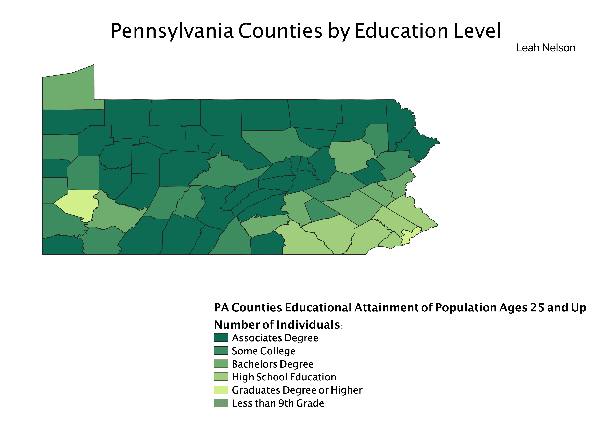

This Map shows the level of Educational Attainment by County for Pennsylvania in 2019. This data is from the population ages 25 and up. The colors are representative of the largest portion of the population's educational level in each individual county.
